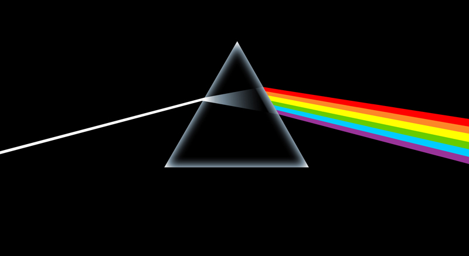

History
In the 13th century, Roger Bacon theorized that rainbows were produced by a similar process to the passage of light through glass or crystal.
In the 17th century, Isaac Newton discovered that prisms could disassemble and reassemble white light, and described the phenomenon in his book Opticks. He was the first to use the word spectrum (Latin for "appearance" or "apparition") in this sense in print in 1671 in describing his experiments in optics. Newton observed that, when a narrow beam of sunlight strikes the face of a glass prism at an angle, some is reflected and some of the beam passes into and through the glass, emerging as different-colored bands. Newton hypothesized light to be made up of "corpuscles" (particles) of different colors, with the different colors of light moving at different speeds in transparent matter, red light moving more quickly than violet in glass. The result is that red light bends (refracted) less sharply than violet as it passes through the prism, creating a spectrum of colors.
